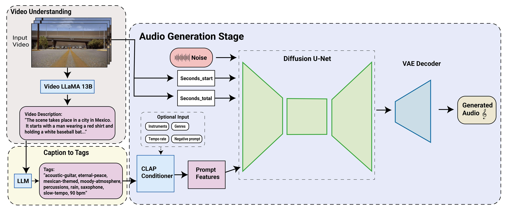

SONIQUE
Video to Music Generation:
Demo 1: Transition Scene from Breaking Bad
Demo 2: Car Chase Scene from Movie Infinite(2021)
Demo 3: Transition Scene from Friends
Demo 4: Landscape Scene from Vloggers Lei and Josh
Demo 5: Campaign Scene from Balenciaga 2022
Demo 6: Cartoon Scene from Zootopia
Text to Music Generation:
Tags: Guitar, Drums, Bass, Rock, 130 BPM
Tags: Piano, Classical, Ambient, Slow, 80 BPM
Tags: Drums, 80 BPM
Abstract:
In recent years, we’ve seen rapid advancements of LLM and Image Generation models. However, few of the research dive into Conditional Music Generation, specifically for video. Due to the limitation of the available video-audio pairs dataset and computation limitation, video to audio generation has always been a formidable challenge task. Building upon this foundation, this thesis introduces an efficient approach leveraging on a multi-models structure to generate background music for video. Specifically designed to assist video editors, this tool not only facilitates the generation of fitting background music and sound effects but also allows users to customize outputs based on preferred instruments, genres, tempo, and even specific melodies. This tool aims to simplify the workflow of video editors and music composers. This thesis bypass the challenges of Video-Audio pairs dataset needed for the specific tasks and the multi-model is capable to run on consumer level devices.
The system is splitted into several stages:
- Video Understanding Stage: Differs from traditional methods that extract rhythmic features from videos, Sonique leverages on pretrained video understanding model Video LLaMA to generate text descriptions of videos. This narrative description encapsulates the essence of the scene and serves as the foundation for further processing.
- Caption to Tags Stage: Translate Video LLaMA's output into a set of descriptive tags via a Large Language Model (LLM), such as “acoustic-guitar, eternal-peace, mexican-themed, moody-atmosphere, percussions, rain, saxophone, slow-tempo, 90 bpm.” These tags are then pass into the next stage.
- Conditional Audio Generation Stage: The tags and video duration extracted from last stage will be pass into the conditioner under the diffusion model adapted from Stable Audio. The system utilizes a Diffusion U-Net, which takes a encoded noise input and transforms it through a series of stages conditioned on these tags and timing cues, ultimately passing it through a VAE Decoder. This results in high-quality, contextually aligned audio output that harmoniously complements the video narrative in both mood and thematic elements.
Evaluation:
The evaluation process involes a group of 38 people with the backgrounds in video editing and music technology. They watched 7 generated demos and rated from 1 - 5. Overall, 75% of participants rate the generated audio aligns with the video scenes, and many rates as perfectly related. The result showcases SONIQUE's capability to create audio that aligns with video content across various scenarios, including transition and action scenes. However, still 25% of the evaluation suggests the results are disconnected. The model fails to capture the nuanced moods and themes that certain scenes such as comedic scenes from Friends. This showcases rooms for improvement for the model's emotional and thematic alighment with the video content.